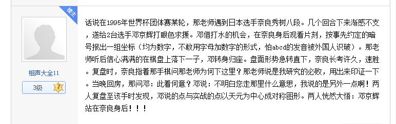
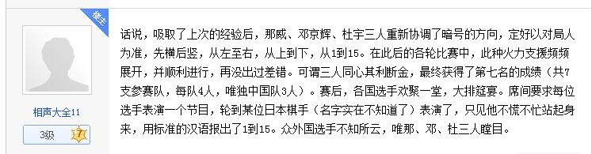

从贴吧淘来的历史小八卦
#1 从贴吧淘来的历史小八卦 作者：梧桐风 发表时间：2013-8-22 21:24:14


［ 釣鱼岛岛主同学于 2013-8-22 21:37:20 时花20金币送鲜花一朵］
［ 釣鱼岛岛主同学于 2013-8-22 21:37:20 时花20金币送鲜花一朵］
［ 釣鱼岛岛主同学于 2013-8-22 21:37:20 时花20金币送鲜花一朵］
［ 掌棋如烟 于 2013-8-28 10:51:50 时奖励此帖[金币加 100 威望加1］
#2 Re:从贴吧淘来的历史小八卦 作者：梧桐风 发表时间：2013-8-22 21:26:36
 姑且一看
姑且一看
#3 Re:从贴吧淘来的历史小八卦 作者：掌棋如烟 发表时间：2013-8-23 17:03:05
咯,这是小说么???#4 Re:从贴吧淘来的历史小八卦 作者：伤情路 发表时间：2013-8-23 21:23:23
#5 Re:从贴吧淘来的历史小八卦 作者：幾 发表时间：2013-8-23 23:05:49
看来不是小说。估计作者和那威集团有一定的矛盾。#6 Re:从贴吧淘来的历史小八卦 作者：烟雨淋晨尘 发表时间：2013-8-25 14:07:45
楼上有点阴谋论呢？就是当年的一段趣闻，对一个时代的怀念。其实看那个老前辈的帖子，颇有点物是人非的感觉，挺好的。［ 黄药师同学于 2013-8-25 14:46:42 时花20金币送鲜花一朵］
［ 黄药师同学于 2013-8-25 14:46:42 时花20金币送鲜花一朵］
［ 黄药师同学于 2013-8-25 14:46:42 时花20金币送鲜花一朵］
［ 黄药师同学于 2013-8-25 14:46:42 时花20金币送鲜花一朵］
［ 黄药师同学于 2013-8-25 14:46:42 时花20金币送鲜花一朵］
［ 黄药师同学于 2013-8-25 14:46:42 时花20金币送鲜花一朵］
［ 黄药师同学于 2013-8-25 14:46:42 时花20金币送鲜花一朵］
［ 黄药师同学于 2013-8-25 14:46:42 时花20金币送鲜花一朵］
［ 黄药师同学于 2013-8-25 14:46:42 时花20金币送鲜花一朵］
［ 黄药师同学于 2013-8-25 14:46:42 时花20金币送鲜花一朵］
#7 Re:从贴吧淘来的历史小八卦 作者：釣鱼岛岛主 发表时间：2013-8-25 15:49:35
5楼所言恰恰相反，发帖人正是当年辞掉自己的本职工作跟随那威宣传五子棋的姚建京。#8 Re:釣鱼岛岛主【==Re:从贴吧淘来的历史小八卦==】 作者：老黄 发表时间：2013-8-25 18:55:50
引用：难道你不知道他们早已反目？
原文由 釣鱼岛岛主 发表于 2013-8-25 15:49:35 :
5楼所言恰恰相反，发帖人正是当年辞掉自己的本职工作跟随那威宣传五子棋的姚建京。
#9 Re:从贴吧淘来的历史小八卦 作者：屏蔽 发表时间：2013-8-25 23:22:21
#10 Re:从贴吧淘来的历史小八卦 作者：梧桐风 发表时间：2013-8-27 12:34:50
看到RIFCHINA的这个帖子我糊涂了。。。
#11 Re:从贴吧淘来的历史小八卦 作者：屏蔽 发表时间：2013-8-27 13:37:33
我也给那帖子跪了……
#12 Re:从贴吧淘来的历史小八卦 作者：梧桐风 发表时间：2013-8-29 18:03:44
以下继更#13 Re:从贴吧淘来的历史小八卦 作者：梧桐风 发表时间：2013-8-29 18:04:51
“康柏杯”国际五子棋名人邀请赛是1997年5月在北京饭店举行的，中央电视台还对最后一轮的两盘棋（一盘是第一台，另一盘好像是于京平对奈良秀树）进行了直播。在我印象里应该是中国第一次举办国际五子棋大赛，外国参赛选手我记得名字的有日本的矶部泰山（或称矶部恭三）、奈良秀树、永平松寿（好像是70多岁了，水平不高，几乎每盘都
开花月浦月给对手送分，但令人钦佩）；俄罗斯的亚历山大（俄文版五手两打的作者）；台北的钟先骥；瑞典的约翰等。中国棋手有邓京辉、张进宇、李栋、于京平、陆瑶、殷立
成、邵小东等（记不全了），比赛水平还是比较高的。我是副裁判长，裁判长是我的裁判老师仇庆生。经过半年多的裁判锻炼和仇老师的指导，我基本上可以独立作业了，所以仇
老师亲临现场的次数不多。环境和待遇方面，我记得赞助款约10万左右（因为负责竞赛，对资金方面了解不多，也许有误），要缴纳场地费、转播费还要请翻译等等，最后可能不
赔不赚，细心的朋友可以算一算。我们常驻的工作人员三餐吃的是盒饭，常有棋手蹭吃蹭住，我住4人间但常态是在4张单人床之间加3张地铺睡7个人。至于91楼提到的“奢华”朋
友们自己想吧，毕竟每个人对“奢华”的标准不同。
给我留下印象最深的一盘棋是钟先骥对奈良秀树，钟先骥开寒星被换，给奈良留了黑5必胜，白6又走了个从没见过的弱防，颇有给奈良出考题的味道。当时的赛制是每人2小
时走满15手，之后每10分钟10手棋。当时奈良长考了100多分钟，再加上开局磨叽的时间奈良快超时判负了。我叫上翻译去提醒奈良注意用时规定，奈良对我笑了笑。然后又想了
10分钟左右才开始走棋。结果好像是第15手，钟先骥就投子认负了，最后奈良还剩2分钟多一点。事后我们讨论奈良到底是计算出了必胜呢，还是回忆出了必胜呢？我觉得是计算。
［此帖子已被 梧桐风 在 2013-8-29 18:09:51 编辑过］
#14 Re:从贴吧淘来的历史小八卦 作者：梧桐风 发表时间：2013-8-29 18:07:38
2002年中国棋院举办的第一届全国赛结束之后，棋院开始着手准备《中国五子棋竞赛规则》。当时我还算主力裁判之一，在刚刚结束的全国赛中任副总裁判
长兼任男子A组裁判长。棋院多次组织相关人员开会讨论，基本上我每次都参加了。规则的主体结构由我的裁判老师仇庆生老师主笔，技术部分则主要由
我、肖斌、解蕾、崔悦、于京平等人做最后的敲定。2003年的上半年，我们几个相关人员多次相聚在仇老师家，经常讨论至深夜。最终编写出了大家见到的
中国第一版由官方审定的《中国五子棋竞赛规则》（2003）版。2009版的《规则》在2003版的基础上对一些术语、名词的解释进行了微小的调整。而2013版
的《规则》则是对五手两打进行了根本上的更改，即改变为五手N打规则。后两版规则的编写工作我都没有参与，但2009版《规则》上出现了我的名字。许
多人都要质疑为什么？原因之一是：2009版《规则》继承了2003版的主要内容，没有规则上的大的变化。而我是2003版的主要编写者之一，2009版仍然有我
的心血在里面。原因之二是（爆料了）：在2003版《规则》的前言中不知是哪个环节的失误，漏掉了我的名字（有这个版本《规则》的朋友可以仔细看一
下）。换句话说作为主要编写者，我被隐身了。所以在出版2009版《规则》是在肖斌的提议下，经过棋院的同意，加上了我的名字（可惜我手里没有这一版
本的规则，遗憾啊！）。现在请有良知的朋友们想一想：在2009版《规则》中到底应不应该出现我的名字呢？我是该脸红呢，还是该骄傲呢？
#15 Re:从贴吧淘来的历史小八卦 作者：梧桐风 发表时间：2013-8-29 18:16:16
1998年第二届世界杯五子棋青少年锦标赛，是康柏杯之后又一次中国主办的国际性比赛。这次比赛对世界五子棋的发展和北京五子棋的发展都有极其重要的
意义。对世界五子棋来讲，错失了一次发展新技术的机遇。对北京五子棋来讲其后成立的的希望棋校为五子棋的发展带来了一次机遇。所谓发展新技术的机
遇，就是“妖刀”。妖刀开局的来源在百度上有许多介绍，在此我就不再赘述了。妖刀出现后，北京连珠五子棋文化体育交流中心技研部的于京平、张进
宇、崔悦、白涛、殷立成、李栋等一大批棋手开始进行研究，最后认为最强的妖刀是H8、I9、I11开局，此开局黑棋五手两打的连接点颇多，黑白对攻激
烈，充满无数的陷阱。当时的世界规则还没有明确提出“禁止使用26种开局之外的开局”。大家也担心在世界比赛中使用会引起争议，于是采用了折中的办
法，就是在青少年比赛中由少年棋手首先使用，进行试探。我记得当时比赛的仲裁委员会由彭建国,达富弘知和一名俄罗斯棋手(名字记不住了)3人组成，
ANDO是以旅游者身份来北京观摩（即不是领队，也不是棋手，更不是仲裁委员），并没有权利提出和参加仲裁。但实际的仲裁是由各国领队（莫名其妙）和
仲裁委员会集体做出的（ANDU好像没有参与），仲裁结果是改判和棋。并导致世界规则中增加了“禁止使用26种开局之外的开局”的条文。我个人认为“妖
刀”开局的出现丰富了五子棋的变化，对五子棋技术的发展应该有一定的积极作用，就这样被扼杀在摇篮中甚为可惜。
#16 Re:从贴吧淘来的历史小八卦 作者：梧桐风 发表时间：2013-8-29 18:27:03
在我个人看来，“妖刀”的仲裁结果直接否定了众多棋手一年多的辛苦努力，可能是希望棋校成立的直接诱因。当时的北京五子棋圈子里已经有点山雨欲来
风满楼的味道。从最早的京都连珠五子棋俱乐部到北京连珠五子棋文化体育交流中心，那威老师一直倾注着大量的心血，由此奠定了那老师在中国五子棋界
“教父”的地位，也养成了那老师“一言堂”的作风。当时交流中心的经营状况尚可，基本上可以按时给我们员工发出工资（已经不用那老师每月在外企服
务总公司领完工资后，再给我们发工资）。但众多的棋手却不能从五子棋的发展中得到什么名誉之外的利益。再加上那老师所处的地位，各种矛头当然直指
那老师。在世青赛结束的当晚，原东城分社的棋手崔悦、白涛约我吃饭，一起的还有原远郊分社的邓京辉等人，边吃边聊中话题就谈到对当时五子棋现状和
对那老师的不满，并提出要成立一个棋校与那老师分庭抗礼的设想，希望得到我的支持和参与。当时正在那老师那里窝了一肚子火，再加上朋友们的盛情邀
请，就一口应承了。之后不久，成立了以邓京辉为法人的希望棋艺培训学校，周挥（庆祝黑猫夺冠贴子中的中年女人，不会下五子棋却为五子棋默默奉献了
近20年，尊称周姐）负责办公室的日常工作，我和肖斌负责竞赛和初级培训，崔悦、殷立成、白涛、张晖等棋手负责中高级培训及技术研发。我和周姐追随
那老师多年，在交流中心负担了大多数的日常工作，用起来很是得心应手，我们的离开对那老师应该是一个不小的冲击。我们离开之后交流中心陆续招来王
刚、解蕾、姚志勇（少年队棋手姚金蕊之父）等工作人员。
#17 Re:从贴吧淘来的历史小八卦 作者：梧桐风 发表时间：2013-8-29 18:31:05
（崔悦回帖）邓金辉和白涛离开并组建希望棋校的原因不知道，似乎在任何途径都没听说过，我离开那威转投希望棋校是白涛和刘彤鼓动的，那时刚结束世界青少年赛，
而林静关键时刻的被迫让棋使得我当时很气愤，很冲动，也就同意了共同组建希望棋校的想法，后来冷静下来再仔细想想，觉得两家竞争也许真的比一家独
大更利于五子棋的发展。最后成立希望棋校的时候，很意外的是刘彤作为最开始的发起人最终没有参与，而开始并不被看好的胖子到是参与了，现在回想希
望棋校的成立对五子棋发展究竟是好是坏并不是太容易判断，我感觉总体来说不是坏事。
#18 Re:从贴吧淘来的历史小八卦 作者：梧桐风 发表时间：2013-8-29 18:32:07
（崔悦回帖）好坏与否只能从不同的角度来看。从高端棋手的训练来看，合在一起比分成两家显然要好，这主要是因为高端棋手一般还要兼任中、高级班的授课，合在一起时的10个棋手，每次
授课分出1、2个，其他人的训练、研究、内部比赛等等都不受影响，且在没有电脑辅助的情况下，共同训练的棋手越多，提出的分歧就越多，整体实力的提升就越快；而分开成两
家后，各自都要兼任中高级讲师工作，每次训练时能参与的人数就太少了，只有2、3个，训练效果要差得多，研究变化不够全面，内部训练赛的水平自然因为人员的分散而档次下
降很多，毕竟10个人一起可以进行多种赛制的训练，且每轮的对手实力很强，能起到很好的训练效果，而分开后的内部赛，需要让水平差一些的棋手参与进来凑人数，就会导致比
赛的水平下降，另外原本很要好的10个朋友突然分成两个对立的阵营，对双方棋手的士气都是一个打击，多种因素下，使得在分开后的两三年时间里，全国赛前十的棋手纷纷退出
五子棋或转职专业讲师或转战网络，导致北京五子棋高端选手的迅速瓦解，一大批棋手迅速销声匿迹，苏良、李栋、辛继权等棋手的相继退出，于京平、刘彤、殷立成、我等棋手
相继向讲师发展，邓金辉、张辉的淡出，白涛因为对立的原因无法参加比赛等等，似乎突然之间，北京棋手上层建筑轰然崩塌，只剩下一两个在支撑。这些都是分家后造成的不良
后果。
#19 Re:从贴吧淘来的历史小八卦 作者：梧桐风 发表时间：2013-8-29 18:40:31
（崔悦回帖）由于分开后高端棋手的训练水平下降，必须补充水平差些的青年棋手参与高水平棋手的训练，使得一些原本在中层的很有天分的棋手可以更早的参与到与高
水平棋手的训练及实战中，因此使得原本一家独大时被压制在各个分社及青、少年队的中坚力量有了迅速成长起来的契机，包括早期青年队的陈伟、王璐，
中后期的曹东、李瑞凡、吴昊等等，以及少年队的王梓、李想、胡瑜、王硕、王天天、姚金蕊、肖迪等等（太多忘了名字了，就记得我自己带过的几个，没
提到名的别介意）。而在我之前提到的，高端棋手由1、2个去讲课其他人训练变成5、6个去讲课且学员因为分散而变少，使得小课堂的增多，中层棋手有了
快速成长的土壤，这些都造成了一只被压制的青少年棋手快速的成长起来，从这个角度来看，分开成两家并不算差。
之前说的是高端棋手和中层棋手，然后说说最底层的棋手，但也同时是五子棋的基础，也就是职业五子棋的初学者。在一家独大的时候，北京五子棋并不缺
少初级班讲师，早期的高哥（高玉民），后来的张铁良，张万钢，姚建京等等，各个分社也有自己的初级讲师，初级讲师过多而中高级讲师过少是当时的情
况，主要是因为中高级讲师需要自身的水平很高，而达到一定水平的棋手并不想浪费太多时间去备课讲课，而是以提升自己为主，而当时外培的学校很少，
基本就是一个春江小学，具体几个班不知道，大概3、4个，这个姚建京知道，初级班少而老师多，使得很多初级老师没事干，造成了初级班讲师资源浪费，
而学员的水平一旦进入中级就找不到老师带，只能参加青年队的训练，而青年队的训练就是各自练棋，有课也是大课，主讲是当时刚刚升入初段的白涛（也
许是1级）和刘彤（也许是2级）。希望棋校成立后并不想和那老师形成直接的对抗，于是把重点放到了五子棋基础的开发中，在北京几十所中、小学都开设
了五子棋的初级培训班，同时大力培养希望棋校自己的初级讲师，家学渊源的讲师家庭出身的肖斌和原本就是小学老师的姚建京成为了初级班的主力，这俩
人在分开前都有着丰富的五子棋初级班讲课经验，在我们的努力下，北京有了1万多中、小学生开始学习职业五子棋，此外我、殷立成也在他们忙不过来时
带带课，使得我们自己对初级班授课内容有了一定的了解，更利于我们对中级班的授课，当时北京的五子棋一派欣欣向荣的样子，基础学员的增多使得进入
棋校参加职业初级班的生源变多，初级生源的变多不但让五子棋的群众基础更好，也让北京有了更多更好的后备力量，从这个角度看，分开还是很不错的，
起码是对五子棋来说。但可惜的是没等这批学生成长起来，双方就都支撑不住了，最后的再次合并也就成了必然，而合并和分开时一样，再次丢失了大批学
员和棋手，最后使得现在北京棋手高端的没几个，中层的后备力量也少，基础的生源更是损失巨大。
希望棋校的成立，算是当时的一种尝试，虽然最开始时每个人都有这样那样的原因，这样那样的恩怨，但分开后各自都朝着自己规划好的目标在努力，曾经
也一起共创了一度的辉煌，最后大家都输在了钱上，当我们这一代棋手到了32、33时，就不可能在把精力放在棋上去了，每个人都要生活，而偏偏五子棋成
为不了职业。希望棋校和和那威老师的俱乐部（当时的名字我忘了）都想再建辉煌，但可惜的是都没有钱来运营。发展中小学的外培需要有经验有时间的初
级讲师，提高中高级棋手的水平，需要场地需要系统的训练计划，而没有钱都没法达到，现在我已经退出10年了，我和五子棋接触几乎没有了，但我知道还
有一些人在努力，这里打个招呼吧。
好久没见，那老师好啊！
好久没见，周姐好啊！
好久没见，老姚好啊！
好久没见，肖斌好啊！
好久没见，姚建京通知好啊！
好久没见，胖子好啊！
好久没见，那些已经离开的和还在努力的朋友，大家好啊！
快过节了，大家节日快乐！！！
#20 Re:从贴吧淘来的历史小八卦 作者：梧桐风 发表时间：2013-8-29 18:42:32
（姚建京）交流中心和棋校的竞争由普及和招生开始，棋校的优势在于比较重视普及工作（也是为了自身的生存）。当时我、崔悦、殷立成等没有正式工作
的人员，每天带着五子棋的介绍材料、骑上自行车、划好片在北京城近郊区的大街小巷转来转去，见学校就进，找校长谈开五子棋班的事。鼎盛
时期，两家在北京城区的几十所小学开办了五子棋班，直接受众近万人，能讲课的棋手都发动起来讲课（我和殷立成每周五次排满，崔悦、肖斌
等每周也有二到四次不等），一方面增加了棋手的收入，一方面使更多的小学生接触到了五子棋，并从中挖掘了不少优秀的青少年棋手，如李
想、肖迪、王天天等。交流中心的优势在于那老师经营多年人脉广基础厚，对上层的沟通比较顺畅，拉赞助搞比赛相对容易些。开始的时候，两
边的关系势同水火，随着时间的推移和两边棋手的交流，关系逐渐缓和，开始参加对方组织的比赛和活动，应该说已经逐步进入良性竞争的局
面。可惜后来因为资金的原因希望棋校散了摊子，我考到了街道，周姐则又回到交流中心。从此又回归到交流中心一枝独秀的局面，各小学开办
五子棋班的热潮也逐步消退。我经常设想，如果棋校不倒，以当时的形势两家良性互动起来，形成优势互补，棋校占领低端普及市场，从中发现
并培养优秀的青少年棋手作为人才储备，交流中心占领高端走上层路线、搞大型比赛为成年棋手提供发展空间，北京五子棋的发展又会是一种什
么局面呢？可惜历史是不容假设的。
#21 Re:从贴吧淘来的历史小八卦 作者：梧桐风 发表时间：2013-8-29 18:45:53
（崔悦）继续讲故事吧，其实以前大家一起下棋时故事还是挺多的，也都挺有意思的，比如五子棋的三大饭桶，我连替补都没进去，不过我觉得我应该有
实力进替补的，记得一次我去棋院找姚建京，他说发现了个吃饭的地方，肉饼不错，我们俩就跑去了，最后好像是吃了3斤半肉饼，俩瓶啤酒，2
个或是3个凉菜，还有人家送的俩大碗粥，我记得姚建京就比我多喝了1碗粥好像，因为我不喝粥，吧我的粥给他了，姚建京那会是五子棋第一饭
桶。
3大饭桶之二（也许是之三）殷立成，记得那会一起训练，完事了去附近吃羊肉串，每次都是胖子点菜，他从来都是百串为单位的，“老板来200
串”“再来100串”当然他自己还得来2个大肥腰，啤酒是不能少的，其他什么板筋啊，鸡胗啊什么的也得有些，我一直怀疑我后来胖起来是那会
攒下的能量。
3大饭桶替补之肖迪：记得有次去上海比赛，李洪斌第一天带我们去住的附近吃汤包，有点甜，挺好吃，不过吃多了腻，我和胖子一起吃了大概3
笼，一人一碗牛肉汤，肖迪吃了2笼，第二天肖迪早早起来跑去吃早点，还是汤包，他当时好像是吃了3笼包子1笼蒸饺（也可能是4笼包子）加1碗
汤，回来时还说呢，“不敢吃饱，一会有比赛呢”，问他昨天怎么吃那么少，回答“第一次见李老师，还是李老师请客，没敢多吃”。在棋校
时，训练完了一起吃饭，一般是姚建京、胖子、肖迪都在，我，肖斌有时还有张超，去吃羊肉串，那叫一个壮观啊。
三大饭桶中其实一直没有什么表现的是姚建京，他没什么吃的特别多的时候，他之所以排名第一，是因为他不管和谁出去吃饭，包括其他几个饭桶，他都能吃到最后，大家都吃不动的时候，姚建京经常本着不能浪费的原则，把桌上剩余的菜都吃掉，和他一直吃饭，一般不怎么担心剩菜。
#22 Re:从贴吧淘来的历史小八卦 作者：梧桐风 发表时间：2013-8-29 18:48:58
 “老板来200串”“再来100串” @殷立成。。。
“老板来200串”“再来100串” @殷立成。。。